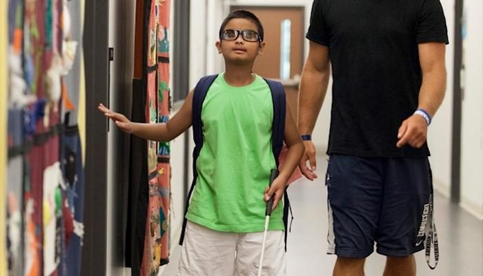

About Our School
For more than six decades, Wa Methodist School for the Blind has been a beacon of hope and opportunity for blind and low-vision learners across northern Ghana.
Our Story
Founded in faith, built on possibility
In May 1958, the Methodist Church, Ghana established a school in Wa to open the door of education to children with blindness. It grew to become, for many years, the only institution of its kind serving the Upper West, Upper East and Northern regions and communities from across the country.
Our founder and first headmaster, Benjamin Kwaku Awumee, led the school from 1958 to 1981, laying foundations of dedication and care that continue to guide us. Today the school operates with the support of the Ghana Education Service and the Methodist Church, providing basic education, a rehabilitation class and vocational training.
We are proud of our learners (many of whom have gone on to secondary school, further education and meaningful careers) and of a community of staff, partners and friends who believe that disability is never inability.

What Drives Us
Mission & Vision
Our Mission
To prepare and equip children with special needs (from kindergarten through post–junior high school) with the academic, socio-economic and moral training necessary for self-reliance and a dignified, independent life.
Our Vision
A society in which blind and low-vision people are fully included: learning, working and participating with confidence, independence and equal opportunity.
Disability is not inability. Given the right tools, unwavering support and a place to belong, every learner here is capable of extraordinary things.
A belief at the heart of our school
Our Journey
Milestones along the way
-
1958
The school is founded
The Methodist Church, Ghana establishes the school in Wa, with Benjamin Kwaku Awumee as founder and first headmaster.
-
1981
A legacy of leadership
After more than two decades of service, our founder's tenure concludes, leaving a lasting foundation of care and excellence.
-
2009
Computer learning centre opens
With support from the Force Foundation (Netherlands), UNESCO and the Ghana Society for the Blind, a computer learning centre and studio are inaugurated to strengthen ICT skills.
-
2011
Overcoming adversity
A fire damages the boys' dormitory and assembly hall. The school community rallies, adapting spaces and continuing to teach.
-
2016
5,000+ learners served
Leadership reflects on a legacy of more than 5,000 students who have passed through the school since 1958.
-
Today
Building an accessible campus
With partners such as the Nubuke Foundation (since 2011) and Rotary clubs, the school continues to expand skills, creativity and accessibility for every learner.
Leadership & governance
The school is led by a Headmistress and works in partnership with the Ghana Education Service and the Methodist Church's Education Unit for the Upper West Region.
- Headmistress: Reverend Grace Amoako (as reported in recent years).
- Methodist Education Unit: Upper West Regional oversight supporting Methodist schools.
- Partners: Ghana Society for the Blind, Nubuke Foundation, Rotary clubs and many friends of the school.
Leadership details are drawn from public reports; please contact the school to confirm current office-holders.
Be part of our story
Every contribution helps write a brighter chapter for our learners. Join us in making accessible education a reality.
Support Our School